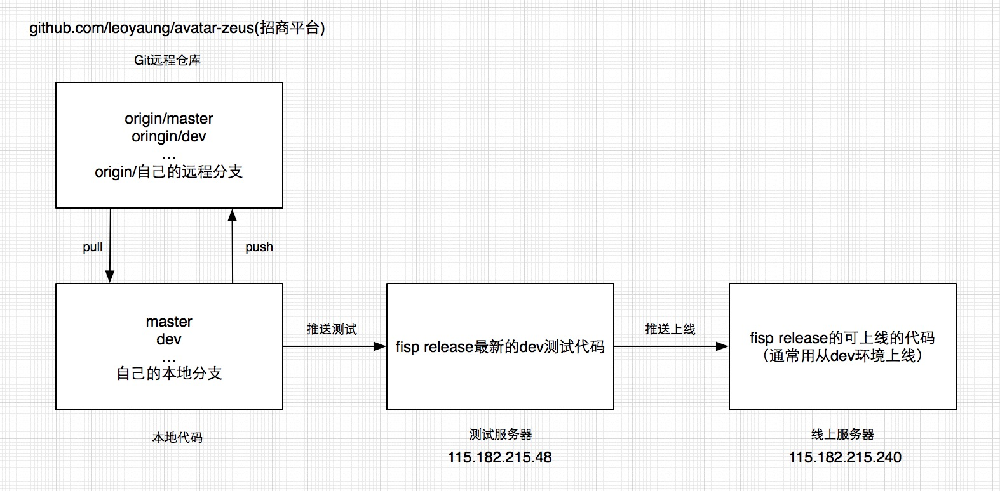

代码流转过程关系
引言： 希望读者通过本文能清晰的明白我们在开发中常常使用的几个环境，以及代码之间的流向。
如图所示，我们就以招商平台的几个环境为例，去了解我们项目发开过程中的代码流向。 
1. 本地开发环境
本地开发环境，简而言之，就是我们每个人的开发机，以及我们在自己的开发机中配置的开发环境。还记得我们在刚刚进入公司的时候，安装的iTerm2、phpStrom、FIS环境搭建等等，这些都是我们本地开发环境的重要组成部分。其中，不得不说的两个重要等组成部分，一个是fisp，一个是git。这两者是我们本地环境与其他工作环境沟通的桥梁。
在本地，我们通过搭建好的fisp环境，就可以将写好的项目编译并发布到远端。我们还可以通过git将我们本地的代码提交到远程仓库，也可以将远程仓库的文件或更新获取到本地。
2. 远程仓库
git远程仓库是我们托管代码和实现多人协作开发的重要工具。我们在本地开发的分支可以与远程仓库的分支关联。我们可以将自己在本地开发好的文件发布到远程仓库，相当于做了备份和共享。其他合作伙伴可以通过远程仓库获取你更新的文件。
关于git仓库分支的管理，我们要注意的是，master分支用于稳定版本，个人都有自己单独的分支，也可以操作其他分支或新建、删除分支。关于git的分支管理使用，这里不赘述，详细操作请移步分支开发管理文档。
3. 开发服务器
有时候我们也会称它为开发机，请区别本地开发环境中提到的个人的开发机。开发服务器是一台服务器，但是域名没有注册，所以用域名直接访问时访问不到的，所以，我们就需要配hosts了。我们平时配置hosts是就是为了解析开发服务器的地址。在开发服务器中，我们的项目是分路径管理了，根据不同的域名可以映射到不同的路径下。这样，我们就可以访问对应路径下的代码了。如果对服务器的内容非常感兴趣，我们可以软连到服务器上看看具体的文件结构。如果对实现原理感兴趣，可以请教RD如何去做路径的划分管理，以及虚拟域名的管理。这里不做赘述。
在开发服务器环境中，我们必须要熟悉几个环境。
联调或自测环境，这个环境中，只包含了个人开发的代码，以及联调RD的代码，对于多人合作项目而言，代码是不全的，需要做自测通过、联调成功后，合并其他人的代码。
qa环境，就是我们平时我们提测的环境，在这个环境中，基本包含了一次迭代上线前的多人合并后的所有代码。给qa提供完整的功能、性能等测试的条件。
dev环境，就是标准的上线环境了。通常通过了qa环境的代码，在qa环境中测试没有bug后，代码将发布到dev环境，在dev环境中等待上线。上线的代码就是从dev环境中推送。
4. 线上服务器
线上服务器就是其他人能通过域名就能直接访问的服务器。我们的代码最终就是挂载到这个服务器上。